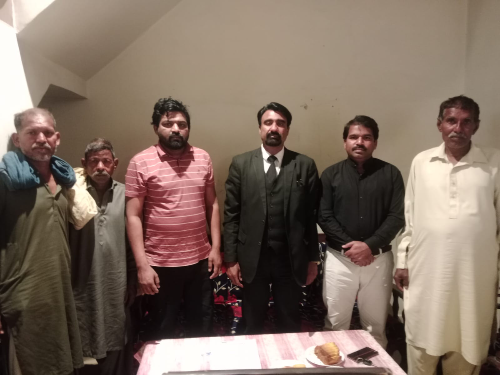
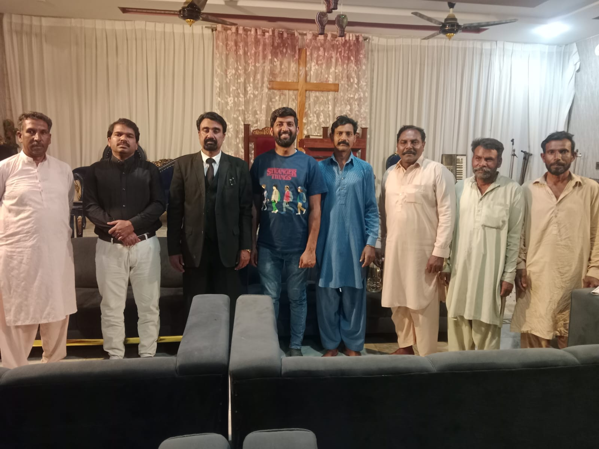
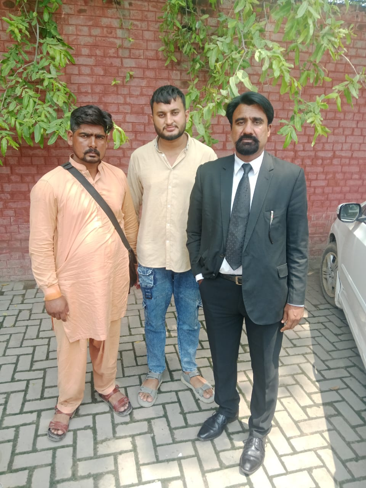
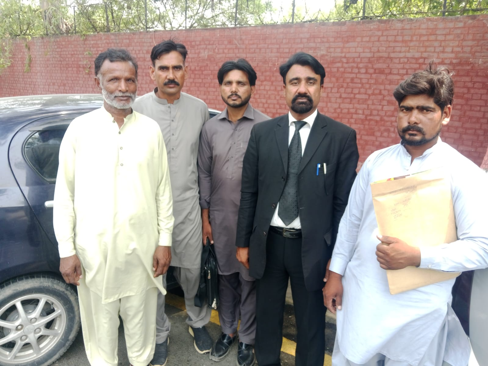
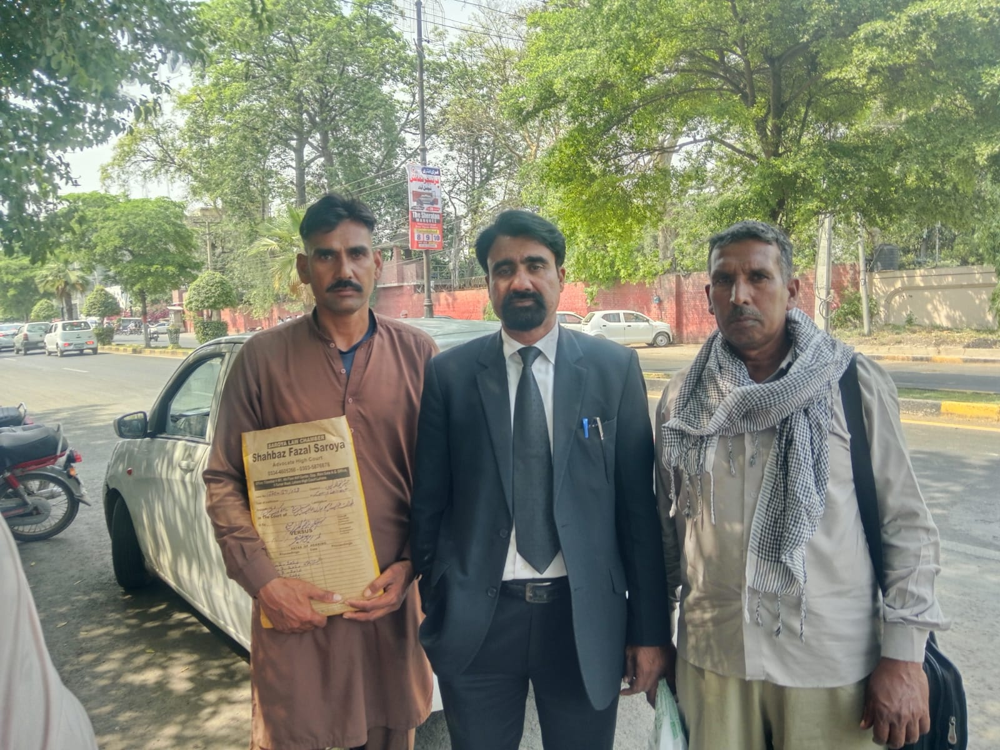
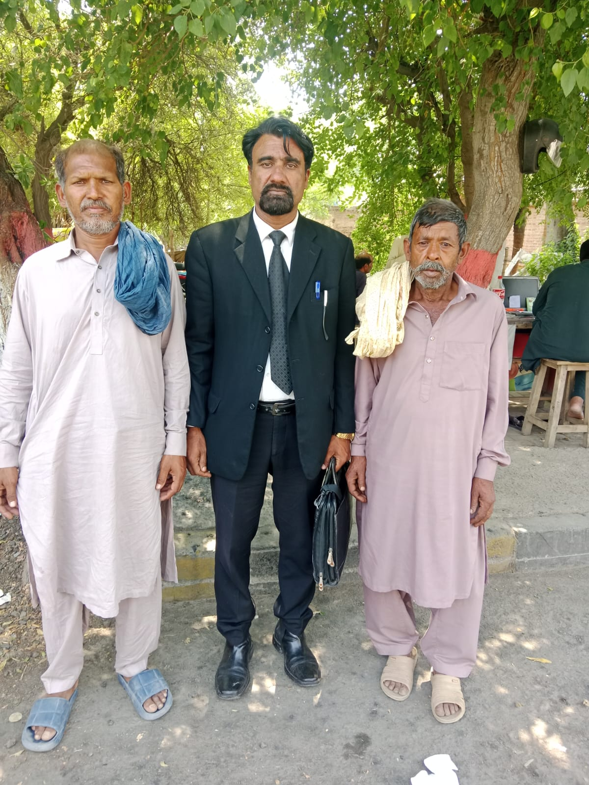
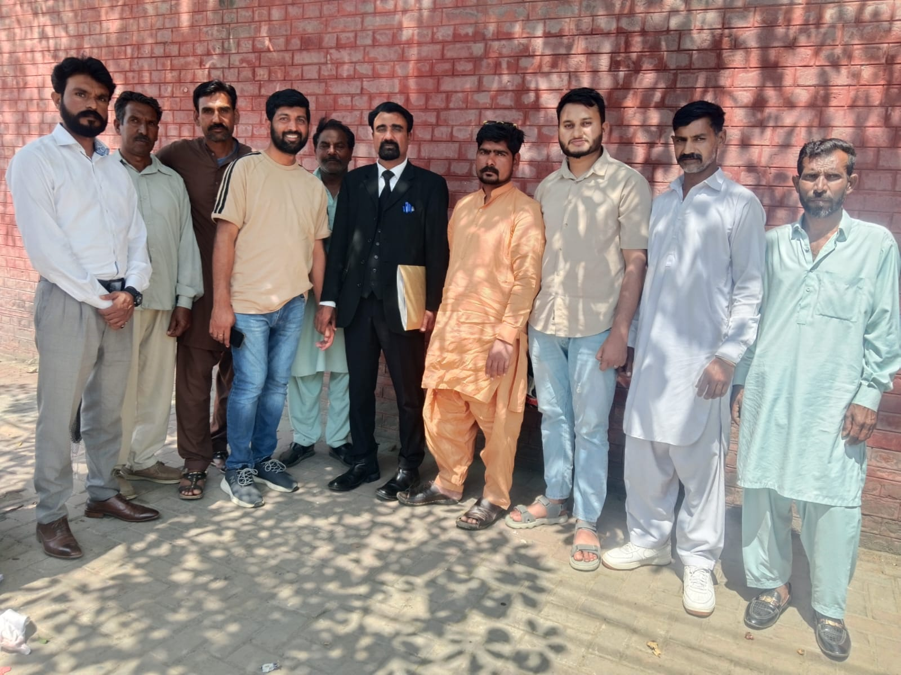
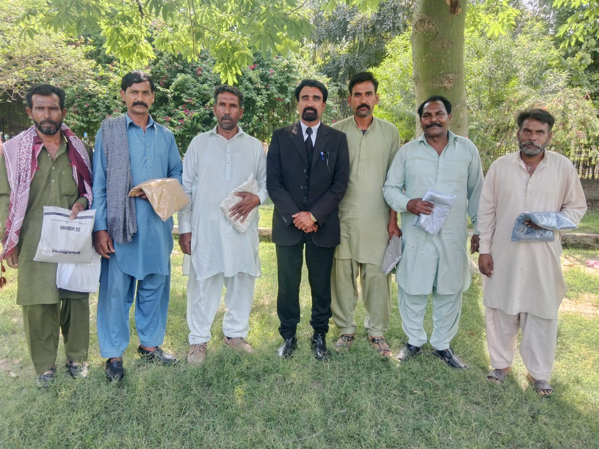

Visiting & Meeting Jaranwala Incident Victims
Our team regularly visits and meets the victims of the Jaranwala incident — listening to their stories, providing legal counsel, and offering spiritual and emotional support during these difficult times.
These meetings are essential to understanding the ongoing needs of the affected community and ensuring that every victim receives the legal aid and representation they deserve.
Grace Fellowship Law Firm and Pakistan Minorities Movement remain committed to standing alongside the Christian community of Jaranwala until justice is served.




Leading Role of Prosecution Witnesses
Leading role of prosecution witnesses for the commencement of their trial cases — FIRs no 1270 and 1271/2023 which were registered at Police Station City Jaranwala against 250/300 culprits of a religious group who unlawfully acted upon to set on fire the articles of Church properties including desecration of Holy Bible with aim to create a sense of fear among Christian community of Jaranwala.
The trial cases are pending before Anti Terrorism Court Faisalabad.
Pakistan Minorities Movement and Grace Fellowship Law Firm are fully supporting — providing legal aid assistance to all victims of Jaranwala incident for the fair trial to punish all those culprits who were declared guilty as offenders.
We shall, with the blessings of our Lord, surely win these cases of Jaranwala incident. God bless all those prosecution witnesses for their success in the name of Jesus Christ. Amen.

Court Visit — Anti Terrorism Court Faisalabad
Today on 10-8-2026, visit to Anti Terrorism Court Faisalabad for recording the cross examination of prosecution witnesses namely Muneeb Masih and Shehroz Gulzar in case no 1271/2023.
Unfortunately, the defence lawyers sought adjournment, so due to this reason, the case was fixed for 17-8-2026 for further proceedings.
We especially thank Mr. Peter Charles, Chairman Pakistan Minorities Movement for his kind effort and support — only having a cause to punish the real culprits of the Jaranwala incident which unfortunately happened on 16-8-2023.


Examination in Chief Recorded — Main Witness
Today on 29-6-2026, trial cases no 1270, 1271/2026 are fixed for prosecution evidence before Anti Terrorism Court Faisalabad in which examination in chief of main witness Sharoz Gulzar has been recorded in the presence of defence counsel.
The case property relating to said cases has already been produced before the learned trial court.
The victims of said cases namely Nabeeb Masih (complainant), Rashid Masih, Sharoz Gulzar, Gulzar Masih (complainant), Bashir Masih, Farooq Masih and Pastor Liaqat Masih — all witnesses are fully prepared by the direction of their counsel Shahbaz Fazal Saroya, Senior Advocate High Court with kind effort and support of Peter Charles, Chairman Pakistan Minorities Movement — only have a cause to punish all culprits of Jaranwala incident.
Now the next date of hearing is fixed for 1-7-2026 for cross examination by the defence counsel.
.jpeg)
.jpeg)
.jpeg)
Court Visit — Evidence Postponed Due to Police Negligence
Today on 23-6-2026, visit to Anti Terrorism Court Faisalabad for hearing of cases no 1270, 1271/2026 for recording their evidence as prosecution witnesses — fully prepared as per direction of their counsel Shahbaz Fazal Saroya, Senior Advocate High Court.
Unfortunately, due to court process, evidence was not being concluded due to unavailability of damaged article of church property by the negligence of police officials. The trial court has already taken a severe notice against this bad investigation of Jaranwala incident cases.
Now the above said cases are fixed on 29-6-2026 for further proceeding.
The victims of Jaranwala incident are especially thankful to Peter Charles, Chairman Pakistan Minorities Movement for their kind legal as well as financial support for the sensitive issues of Jaranwala incident — only having aim to punish all those sectarian community of Islamization who never think about the safety, protection and liberty of all Minorities of Pakistan which already has aimed to provide accordingly to Constitution of Pakistan.

Examination in Chief — Farooq Masih Records Evidence
Today on 4-5-2026, prosecution witnesses Gulzar Masih and Farooq Masih appeared in case/FIR no 1270/2023 for recording their evidence before Anti Terrorism Court Faisalabad.
Witness Farooq Masih recorded his Examination in Chief before the honourable court with intent to convict all those nominated accused who deliberately desecrated our holy places at Jaranwala on 16-8-2023.
The statement of Farooq Masih was very effective according to police investigation.
The next date of hearing is fixed on 18-5-2026 for cross-examination by defence counsel.
Pakistan Minorities Movement and Grace Fellowship Law Firm are fully playing an effective role to gain severe consequences against all those culprits of Jaranwala incident — with financial as well as legal aid to all those victims of Jaranwala incident.


Court Visit — Witnesses Absent, Case Adjourned
Today on 29-4-2026, trial case/FIR no 1278 and 1279/2023 were fixed for recording the chief examination of prosecution witnesses.
Unfortunately, the prosecution witnesses of case no 1279/2023 were absent. Only two witnesses namely Habib Masih and Kashi Masih were present before Anti Terrorism Court Faisalabad for recording their evidence — but due to rush of the cause list, the case was adjourned for next date of hearing on 7-5-2026.
Grace Fellowship Law Firm and Chairman Peter Charles with the assistance of the counsel of trial cases of Jaranwala incident, Mr Shahbaz Fazal Saroya Adv. High Court, are fully assured a fair trial against all culprits of all these Jaranwala incident cases for the ends of justice.

Court Visit — Witnesses Present, Case Property Unavailable
On 14-4-2026, appeared before Anti Terrorism Court for the trial of cases/FIR no 1270/1271 which were fixed for prosecution evidence.
The complainants Gulzar Masih and Muneeb Masih along with eye witnesses of the occurrence — Farooq Masih, Plaster Amer, Dildar Masih, Sharoz Masih, Sadaqat Masih and Mukhtar Masih — were present at court for recording their evidence.
But due to non-availability of case property, these cases were adjourned for the next date of hearing on 21-4-2026.
These prosecution witnesses were fully prepared by their counsel Shahbaz Fazal Saroya, Senior Advocate High Court. All these efforts are being delivered by Grace Fellowship Law Firm and Mr Peter Charles, Chairman Pakistan Minorities Movement — only to gain a cause to convict all those culprits of Jaranwala incident, because all Minorities of Pakistan are equal according to Constitution of Pakistan.

Showcase Notice to SP Investigation — Case Property Not Produced
Today on 2-4-2026, the Jaranwala incident cases no 1270 and 1271 were fixed before Anti Terrorism Court Faisalabad for prosecution evidence.
But due to negligence of City Police of Jaranwala, the case properties have not been sent to court for fair trial. Consequently, the honourable Judge directed a showcase notice with serious misconduct of SP Investigation of Jaranwala with assurance that criminal action should be taken against SHO City Police Station Jaranwala for personal appearance before this honourable court.
All prosecution witnesses were fully prepared but an adjournment was granted due to this reason. The next date of hearing has been fixed on 14-4-2026.
For compliments of prosecution witnesses, small gifts were presented by Peter Charles, Chairman Grace Fellowship Law Firm as well as Chairman Pakistan Minorities Movement — with the assistance of Shahbaz Fazal Saroya, Senior Advocate High Court, Director Grace Fellowship Law Firm, counsel of the prosecution cases.

Case Timeline